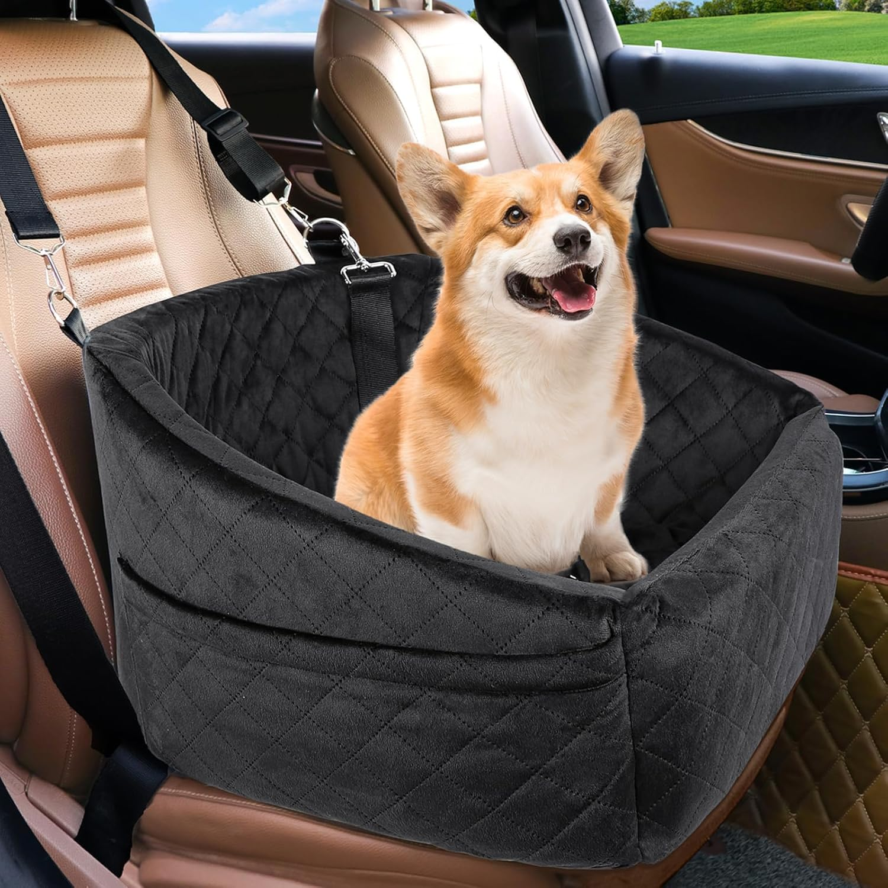
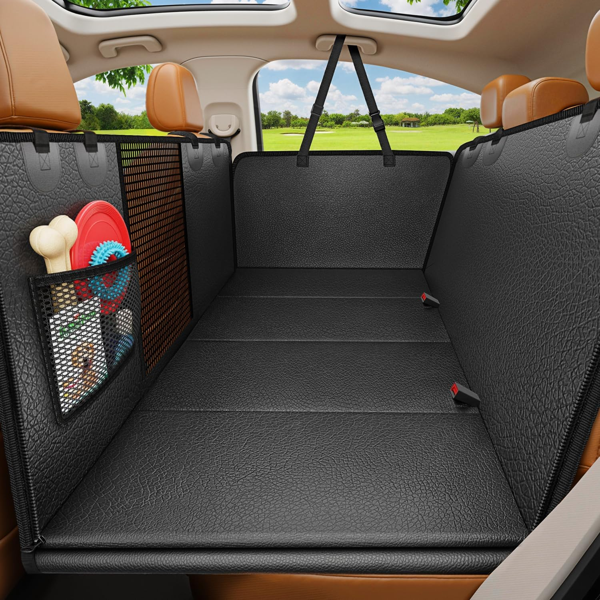

Guía Definitiva: Cómo Viajar Seguro en Carro con tu Mascota
Consejos expertos y accesorios indispensables para aventuras sin estrés.
¿Planeas una escapada y no quieres dejar a tu perro atrás? Viajar en carro con tu mascota es una experiencia maravillosa, pero requiere preparación. Un perro inquieto no solo puede arruinar el viaje, sino que representa un riesgo de seguridad vial importante.
En esta guía, te enseñamos cómo transformar tu vehículo en un espacio seguro y cómodo para tu mejor amigo, siguiendo las recomendaciones de seguridad para mascotas más importantes.
✅ Claves para un viaje exitoso:
- Preparación gradual: Si tu perro no suele viajar, haz trayectos cortos antes del viaje largo para que se acostumbre.
- Nunca lo dejes solo: La temperatura dentro de un auto sube rápidamente, incluso con las ventanas abiertas.
- Documentación al día: Lleva su carnet de vacunación y placa de identificación visible.
- Seguridad ante todo: Nunca permitas que viaje suelto. Utilizar sistemas de retención adecuados es vital para evitar distracciones al volante y protegerlo ante frenazos.
Accesorios Recomendados

Ideal para perros de raza pequeña. Proporciona una vista elevada que reduce la ansiedad al viajar, mientras los mantiene sujetos y seguros, evitando que se muevan libremente por el habitáculo.
🛒 Ver en Amazon
La solución definitiva para mantener tu tapicería impecable. Protege contra pelos, huellas de barro y rasguños, creando además un espacio tipo "nido" que aumenta la seguridad del perro al evitar que caiga al suelo.
🛒 Ver en Amazon
Un accesorio obligatorio. La banda elástica absorbe los impactos en caso de una parada brusca, protegiendo el cuello de tu mascota y conectando su arnés directamente al anclaje del cinturón del carro.
🛒 Ver en Amazon